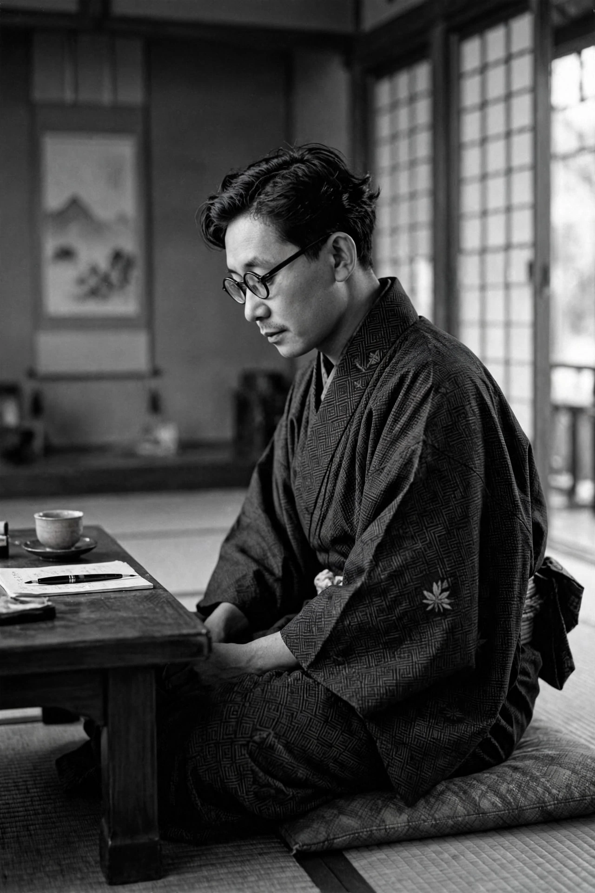

Yasunari Kawabata (Japanese: 川端 康成; 11 June 1899 – 16 April 1972) was a Japanese novelist and short story writer whose spare, lyrical, and sometimes surreal prose works won him the Nobel Prize in Literature in 1968, making him the first Japanese author to receive the award. His best-known works include Snow Country, Thousand Cranes, The Old Capital, The Sound of the Mountain, and The House of the Sleeping Beauties.
| Yasunari Kawabata | |
|---|---|
 Kawabata in 1938 | |
| Born | 11 June 1899, Osaka, Japan |
| Died | 16 April 1972 (aged 72), Zushi, Kanagawa, Japan |
| Occupation | Novelist, short story writer |
| Nationality | Japanese |
| Notable works | Snow Country; Thousand Cranes; The Old Capital |
| Awards | Nobel Prize in Literature (1968) |
Kawabata was born in Osaka into a prosperous family; his father was a physician. He was orphaned young — his father died of tuberculosis when he was one, his mother when he was two — and he was raised first by grandparents and later in a boarding house, experiences of bereavement that marked his writing with themes of loneliness, impermanence, and unattainable beauty. He studied English literature, then Japanese literature, at Tokyo Imperial University, graduating in 1924. His graduation thesis and early stories drew attention while he was still a student; "The Dancing Girl of Izu" (1926) established his reputation.
In the 1920s Kawabata was associated with the neo-sensualist school (Shinkankakuha), reacting against naturalism, and co-founded the journal Bungei Jidai. He later moved toward a style blending modernist technique with classical Japanese aesthetics — influenced by linked verse, haiku, Zen, and the tea ceremony — characterized by suggestion, ellipsis, and melancholy lyricism (mono no aware). Snow Country (serialized 1935–1947) depicts a doomed affair between a Tokyo aesthete and a hot-spring geisha in the snowy west of Japan. Thousand Cranes (1949–1952) turns on the tea ceremony and a cursed inheritance of attraction and guilt. Postwar masterpieces include The Sound of the Mountain, The Old Capital (a love letter to Kyoto), and the eerie novella The House of the Sleeping Beauties.
Kawabata served as president of the Japanese PEN Club and worked to promote Japanese literature abroad; he was a mentor and friend to Yukio Mishima. In 1968 he received the Nobel Prize, cited for "his narrative mastery, which with great sensibility expresses the essence of the Japanese mind". His Nobel lecture, "Japan, the Beautiful and Myself", discussed Zen, death, and the aesthetics of Japanese art.
Kawabata died on 16 April 1972 in Zushi, apparently by suicide by gas inhalation, leaving no note; his death came less than two years after Mishima's sensational suicide, which had deeply affected him. He is regarded as one of the greatest Japanese writers of the twentieth century, and his novels, in translations notably by Edward Seidensticker, shaped Western perceptions of Japanese literature.
From Wikipedia, the free encyclopedia (recreated from memory).